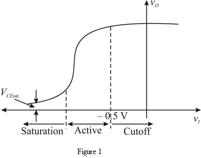
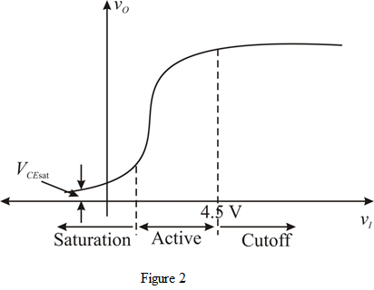

(a)
Refer to Figure P6.77 (a) in the text book.
The voltage gain of the  common-emitter amplifier as shown in Figure P6.77 (a) in the text book is,
common-emitter amplifier as shown in Figure P6.77 (a) in the text book is,
(a)
Refer to Figure P6.77 (a) in the text book.
The voltage gain of the common-emitter amplifier as shown in Figure P6.77 (a) in the text book is,
Draw the voltage transfer characteristics of the  common-emitter amplifier as shown in Figure P6.77 (a) in the text book.
common-emitter amplifier as shown in Figure P6.77 (a) in the text book.

(b)
Refer to Figure P6.77 (b) in the text book.
The voltage gain of the  common-emitter amplifier as shown in Figure P6.77 (b) in the text book is,
common-emitter amplifier as shown in Figure P6.77 (b) in the text book is,
Draw the voltage transfer characteristics of the  common-emitter amplifier as shown in Figure P6.77 (b) in the text book.
common-emitter amplifier as shown in Figure P6.77 (b) in the text book.

Thus, the voltage transfer characteristic is drawn.